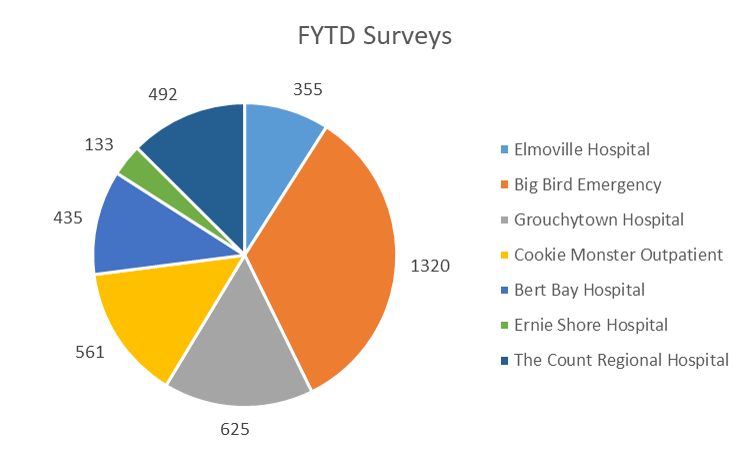
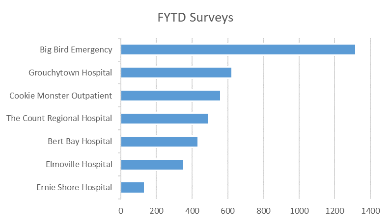
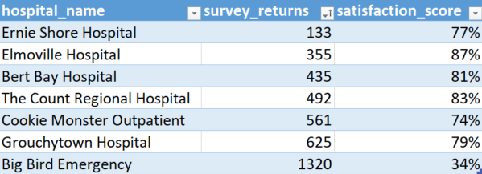
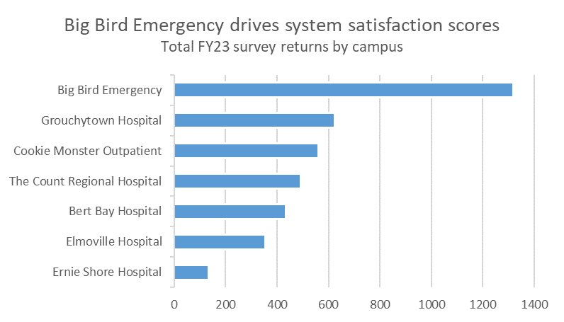
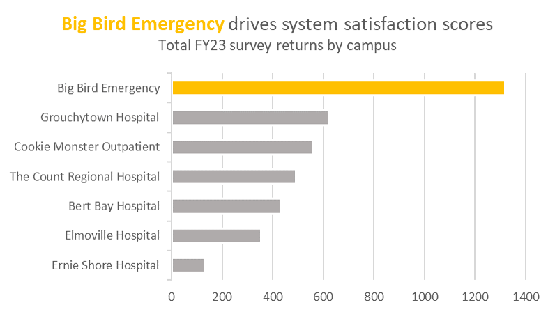
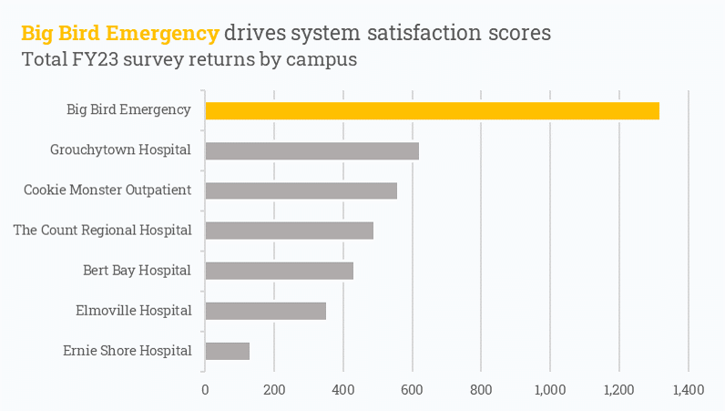

I am an avid R user and will always advocate that others use R (or another programming language) for generating reproducible visualizations. In just about every organization, however, Excel plays an important role in an analyst’s toolkit. In this post, I’ll share some visualization design practices that I picked up while learning R but are ubiquitous and transferable to Excel (most of these suggestions are ripped directly from Will Chase’s “Glamour of Graphics” talk from rstudio::conf(2020), which has heavily informed how I think about visualization design).
A motivating example
For the purposes of this exercise, let’s use fake patient satisfaction data from the Sesame Street Health System, which includes several hospitals and campuses. Let’s say that our system-wide patient satisfaction for the current fiscal year looks like this:

Most of the hospitals have pretty high satisfaction scores — generally greater than 75%! The overall system score, however, sits at 65%. Concerned that there may be an error in the data pipeline or dashboard, your boss asks that you investigate what’s going on and provide an update at the next team meeting.
At first glance, it may be pretty obvious what’s going on — Big Bird Emergency has a pretty low satisfaction score and you know from experience that it’s a larger hospital that generates a lot of survey returns, which may be driving the score down. Since you’re presenting, however, it’s best to use a visualization to communicate this.
Putting together a bad plot
Downloading the hospital data and opening in Excel confirms that Big Bird Emergency has far more survey returns than other hospitals.

A quick plot that technically includes all the information needed may look something like this:

While this does answer the question originally asked, the answer is not clearly communicated by a quick glance. Viewers who know what was originally asked have to do some extra mental work to decode the plot, and viewers who see this without the original context may not find anything useful. Our goal should be to provide a visualization that:
- Clearly communicates the message we want to convey.
- Is able to stand alone in other contexts and still communicate the same message.
- Is visually appealing.
Let’s get started!
Putting together a good plot
Changing to a bar plot

The first order of business is to convert the plot from a pie chart to a bar plot. Pie charts are loved by executives but loathed by visualization practitioners, since information is encoded in each slice’s angle and differences in angle are difficult for the human eye to detect. Bar plots encode the same information with relative position on a scale, which is the most effective method for showing differences. This also has the added benefit in Excel of automatically converting each hospital to the same color, which reduces a lot of the visual noise that was in the original plot.
Flipping axes

In order to read the hospital names in the previous plot, viewers need to crane their necks to align with the axis text. The angled text also takes up a lot of whitespace and makes the important part — the actual data — look a bit squished. Changing to a horizontal bar plot alleviates both of these issues (horizontal bar plots are preferred over vertical ones in general for this reason).
Ordering the data

Unordered categories in a plot can be messy and visually confusing — the viewer’s eye needs to dart around to determine which values are greater than other ones. Ordering the categories reduces this cognitive load and allows the viewer to simply read through the list. In this case (and in most cases), we don’t care about the exact values (just the relative difference between values), so we can also remove the data labels.
To order a plot in Excel, we don’t actually need to do anything to the plot itself — simply turn the raw data into a table then arrange the rows by survey_returns:

Giving the plot a narrative

The original title, “FYTD Surveys”, while technically informative, is uninspiring. We’re putting together this plot to answer the specific question, why is the system satisfaction score 65% when most hospitals have a higher score? A good visualization will directly answer this without needing additional context from the analyst — the title is a great place to state that Big Bird Emergency is driving the system score down.
Also note that there are no axis labels on this plot. Axis labels are often unnecessary — they take up valuable whitespace with information that is either readily apparent (I don’t need a label to know that the y-axis refers to each hospital!) or encoded elsewhere. When possible, remove axis labels and describe the necessary detail elsewhere (i.e., the title or subtitle).
Highlighting the important bits

Color can be a great way to draw our attention to a particular portion of a plot. In this case, not all of the hospitals are equally important in this plot’s narrative — we’re making a distinct point regarding Big Bird Emergency. Highlighting the text and bar for Big Bird Emergency in yellow (Big Bird is, after all, a big yellow bird) while graying out the other bars visually communicates to the viewer this is the hospital deserving the most attention in this plot.
Realigning the plot

In the vast majority of cases, a left-aligned the title/subtitle is strongly preferred over center-aligned one. In western countries, we tend to naturally orient our attention in the top-left corner of plots when we first view them, then migrate our gaze downwards and leftwards (eye-tracking studies confirm this, however I can’t seem to find the source I heard this from, so you’ll just have to take my word for it here). By aligning the title to the left, we reduce how much the viewer needs to dart their eyes around the plot to understand it.
Adding the final touches

Adding some final formatting touches to polish up the visualization not only improves the quality of the plot but also shows the viewer that you’re serious about your craft and willing to go the extra mile to really make a visualization shine. In this case, applying comma-formatting to the x-axis, changing the font, and updating the background to an off-white are all minor edits, but their effects have a big impact on the visualization’s overall presentation.
Citation
@online{rieke2022,
author = {Mark Rieke},
title = {Practical {Data} {Visualization} {Tips} for {Excel} {Users}},
date = {2022-05-31},
url = {https://www.thedatadiary.net/posts/2022-05-31-practical-data-vizualization-tips-for-excel-users},
langid = {en}
}